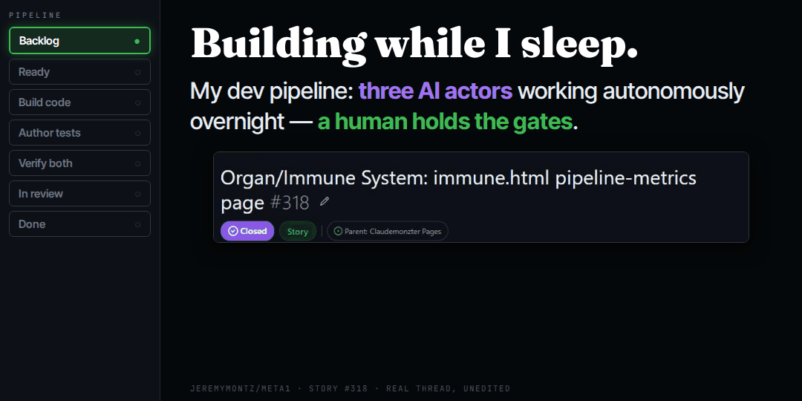

Twenty years of managing software products, and I never wrote any code. Four months ago I had never built anything with AI either. That was my starting point on this journey, a matter now of public record. The field notes on this site date back to late March, written by a product manager journaling his discoveries, one who could not yet tell you what an agent was. I still can’t, frankly. I am the same person four months later. Same instincts, same profession, no computer science degree acquired along the way. The variables are the latest AI models and what they can now do. So the last four months amount to an experiment: when AI supplies the build capacity, what can a product manager’s skill set produce, working alone?
This case study is my answer. Claudemonzter, the lab I build nights and weekends, now runs a development pipeline that builds and tests software overnight, unattended, while I sleep. I want to be precise about that claim, so let’s dig in.
The lab and the pipeline
Claudemonzter is the whole lab: the agents, the memory system (a second brain on disk), and the GitHub repo behind the public site where you’re reading this now. The build pipeline is my latest enhancement: three AI actors and one human driving. Meta1 builds code from a spec. Bond writes tests from the same spec, never from the code, which would be cheating. The Assessor adjudicates: when build and tests disagree, it rules from the spec, not from whichever party sounds more confident, or it escalates to me.
I hold three gates to protect my work. I decide what is ready for the pipeline, after I am satisfied with the specifications and acceptance criteria. I review everything the agents produce after scrutinizing their comments. I only approve the changes when I have no doubts about their impact, and I take comfort knowing I can roll back the changes if needed. I created a GitHub account years ago and never once had a reason to push a commit; now the agents are barred from main by branch protection I configured. Nothing ships until I pull the trigger; maybe later, after the factory has proven itself, I will lift a gate or two. Today, the factory retains my judgment but removes my attendance: I can design features and write user stories by day, and no longer have to sit between the developer and the tester to coordinate their work. Unlike my day job.
One honest caveat before the tour. Four months in, I still cannot tell you exactly where one agent ends and the next begins. I often discuss this with Phil, my philosophy agent. Here, the adjudicator does its part by spinning up the builder and the tester as subagents of itself, all three separate, independent domains under a shared project, which makes “three actors” sound like a crisper definition than it actually is. I don’t have a clear mental model for what an agent is yet, and I notice the people who sound most certain are mostly selling subscriptions to their content.
One night, start to finish

On July 7 at 4:42 in the afternoon I marked story #318 Ready: build immune.html, the page that reports the pipeline’s own health metrics. Then I logged off. At 1:02 the next morning the builder picked the story up on schedule. By 1:11 there was a pull request on a story branch, because the bots cannot touch main. At 2:08 the tester posted contract tests, authored from the spec it never discussed with the builder. At 3:05 the existing checks were green and the adjudicator promoted the story for human review. I read the thread, merged at 11:28, and the page was live before lunch was over. The pipeline’s first autonomous story was a dashboard that measures the pipeline. How’s that for symmetry?
Transparency by design: the comment thread is intended for me, but it’s public and signed, agent by agent. It’s just a click away if you’re curious how the builder, tester, and adjudicator hand work to each other at two o’clock in the morning.
What the gates are for
The gates and the bench came first; it was a lot of unglamorous work but the order was important. You cannot let a pipeline build autonomously and then go shopping for quality controls after-the-fact; the checkpoints and the test bench (an evaluation suite of contract and regression tests) had to exist before unattended runs, or it is a Wild West and not a reliable factory. And the leash is meant to loosen: human scrutiny dials down as the system earns trust, gate by gate, test by test.
Restraint was the first thing I tested, because it is the first thing that goes wrong with capable agents. An over-helpful agent is a blast-radius problem: the same initiative that fixes your bug in passing will also fix things nobody asked it to touch, and you learn later what it decided was broken. So restraint is specified here, not hoped for: the Verifier files and escalates what it finds in shipped territory, and repairs nothing. To prove that rule had teeth, I planted a bug. One wrong token on a throwaway test branch, exactly the kind of trivial defect an eager assistant loves to fix on the way through. The bench went red on the branch, exactly as designed. The Verifier ruled the test correct and the behavior wrong, filed the bug, and stopped. The fix would have been easy, but the change was out of scope, unapproved, and backlogged instead.
That test mattered because a pipeline like this shakes things loose. Standing up a bench of contract tests over an existing site surfaces both kinds of failure at once: latent bugs the pages were quietly carrying, and new tests that assert the wrong thing. You want a system that can tell those apart, and a rulebook for who fixes what. Subsequent overnight stories show the same machinery maturing. When four article pages turned up missing favicons, the root cause was exemplar drift: new pages had been copied from recent pages instead of the template, and an omission propagated. The overnight fix went three layers deep: patch the pages, correct the template, and add a permanent bench assertion so the contract, not the exemplar, is the enforcer. And when I realized the metrics feed itself was published through a workflow that skipped the PR gate, the pipeline got a schema guard: the feed is validated before publish, and a malformed feed fails the job rather than silently degrading the live page. A favicon and a schema check are not important in themselves. They compound: each one raises the floor, and every point of earned reliability buys the agents a little more autonomy.
This is also where I would distinguish what we are doing from pure vibe coding. This pipeline is built on development principles and my own experience working with human teams: spec-as-ground-truth, independent test authorship, escalation instead of guessing, and product judgment and technical judgment each routed to whoever owns it. The principles I’ve learned over my career are codified in the skills and calcified in workflows.
The numbers so far
As of this writing, the bench holds 21 contract and regression tests. Eleven stories have gone through the pipeline lane, three of them fully overnight. The CI membrane has caught 25 red check runs before merge. Three escalations have reached the human: two specifications with open questions and the planted bug. And the public event log runs roughly five agent actions for every three of mine, the ratio I will be watching: how much the machine does versus me, since the agents got their own bot account.
Human judgment at the gates. AI labor in between.
What this is the foundation of
Everything about this pipeline is early, and deliberate. A few overnight stories so far is just the start. The bench is 20+ tests and will undoubtedly be wrong in places. Claudemonzter runs on one model family for now, a choice I made on purpose: a young system with a simple set of failure modes can be understood, and complexity earned over time. And the governance came before the autonomy for the same reason.
My experiment is on-going but has an interim result. One product manager, no prior coding experience, four months with Claude: the output is a working multi-agent system, built and evaluated in public, that now builds and tests software overnight under governance its operator can trust. The skills that made it work are ones I picked up over a long career working with engineers to ship product, now pointed at my own vision. Here I decide what gets built, write requirements precise enough to be executed without me in the room, choose what to delegate and what to hold, and define what done looks like. That is what version 3 of Claudemonzter was all about, making the ground solid enough to build on in the future. I have a vision for version 4.0; I know the north star. The route gets discovered the way everything above got built: one gated story at a time, some of them while I sleep.
Filed under field notes. Receipts: the pipeline epic (#288), its first overnight story (#318, the page it built is the dashboard above), and this page itself, built overnight by the same pipeline (story #456). The threads are signed.